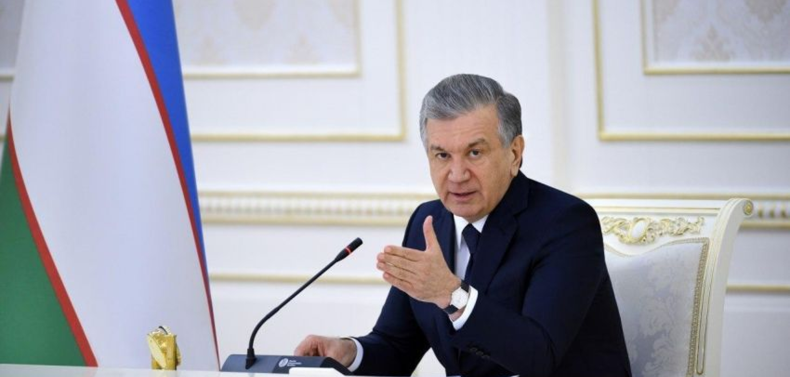
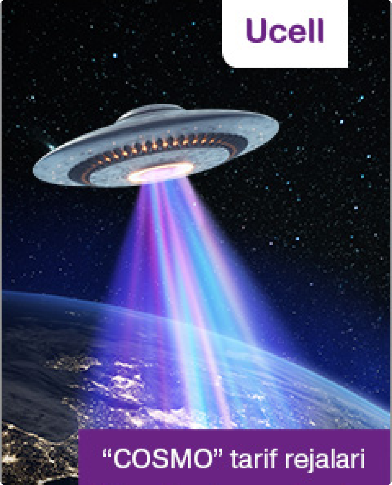
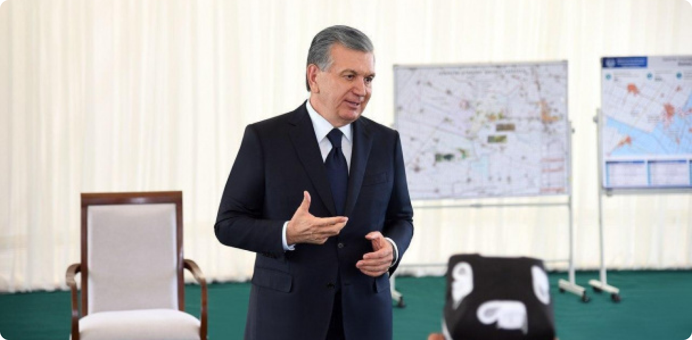
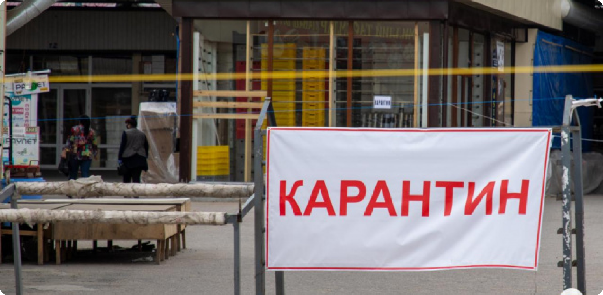
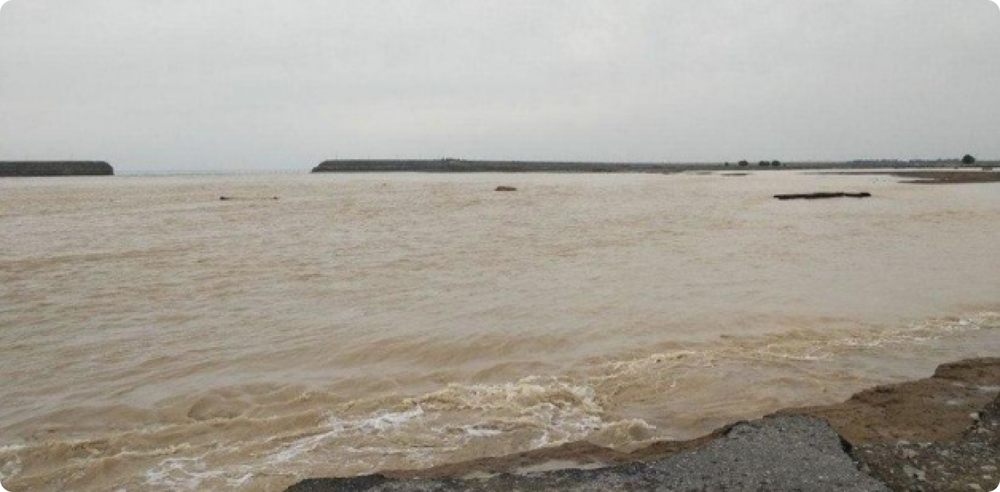

- š 10137.2
- € 138.26
- p 10988.72
- Узбекистана
- Мир
- Экономика
- Политика
- Спорт
- Технологии
- Культура
- Происшествия
- Туризм
Шавкат Мирзиёев строго предупредил хокимов всех уровне
26.06.2024

19 мая состоялось видеоселекторное совещание, посвященное дополнительным мерам поддержки предпринимательства
По данным пресс-службы главы государства, из-за пандемии в Узбекистане число бедных и безработных увеличится, а доходы семей уменьшатся. На совещании обсуждены дополнительные меры и приоритетные задачи в этом направлении
Прежде всего, серьезное внимание уделено обеспечению гарантий прав предпринимателей и неприкосновенности их имущества.
«Предупреждаю всех хокимов. Если имущество хоть одного предпринимателя будет изъято незаконно, хоким одной лишь отставкой не отделается, но и ответит перед законом», - подчеркнул Шавкат Мирзиёев.
Компетентным ведомствам даны указания усилить ответственность за нарушение неприкосновенности собственности, обеспечить полноценное исполнение решений суда о компенсации имущества предпринимателей.
Согласно поручению президента деловая активность в каждом районе и городе будет анализироваться на ежемесячной основе.
Бизнес-омбудсман будет вносить правительству информацию о хокимах районов и городов, которые допускают нарушения прав и неприкосновенности собственности предпринимателей.
Кабинетом Министров будет рассматриваться вопрос о соответствии должности хокимов городов и районов, которые не решают проблемы предпринимателей и не работают с ними в достаточной мере.
По данным пресс-службы главы государства, из-за пандемии в Узбекистане число бедных и безработных увеличится, а доходы семей уменьшатся. На совещании обсуждены дополнительные меры и приоритетные задачи в этом направлении
Прежде всего, серьезное внимание уделено обеспечению гарантий прав предпринимателей и неприкосновенности их имущества.
«Предупреждаю всех хокимов. Если имущество хоть одного предпринимателя будет изъято незаконно, хоким одной лишь отставкой не отделается, но и ответит перед законом», - подчеркнул Шавкат Мирзиёев.
Компетентным ведомствам даны указания усилить ответственность за нарушение неприкосновенности собственности, обеспечить полноценное исполнение решений суда о компенсации имущества предпринимателей.
Согласно поручению президента деловая активность в каждом районе и городе будет анализироваться на ежемесячной основе.
Бизнес-омбудсман будет вносить правительству информацию о хокимах районов и городов, которые допускают нарушения прав и неприкосновенности собственности предпринимателей.
Кабинетом Министров будет рассматриваться вопрос о соответствии должности хокимов городов и районов, которые не решают проблемы предпринимателей и не работают с ними в достаточной мере.
Cамые популярные новости
По факту прорыва Сардобинского водохранилища возбуждено уголовное дело
11:31 / 15.05.2020Cамые популярные новости
По факту прорыва Сардобинского водохранилища возбуждено уголовное дело
Cамые популярные новости
По факту прорыва Сардобинского водохранилища возбуждено уголовное дело
11:31 / 15.05.2020
11:31 / 15.05.2020

Cамые популярные новости
По факту прорыва Сардобинского водохранилища возбуждено уголовное дело
- hokim
- shavkat mirzeyoyev
- pandimiya
Новости по теме

Сардобинское водохранилище
05:28 / 16.05.2020

Карантин в Узбекистане продлен до 1 июня
05:28 / 16.05.2020
